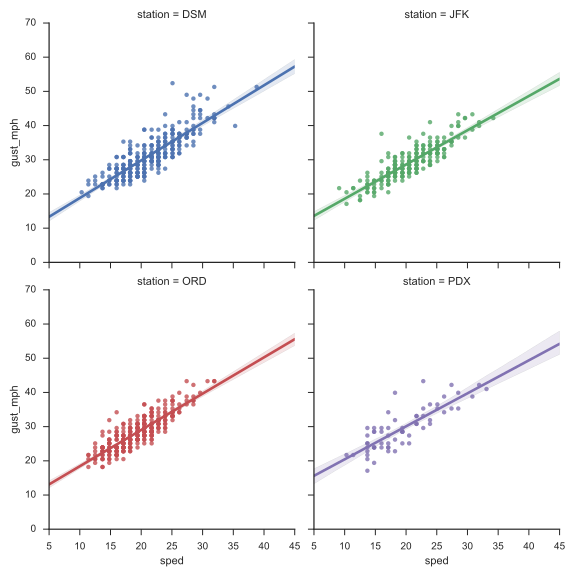
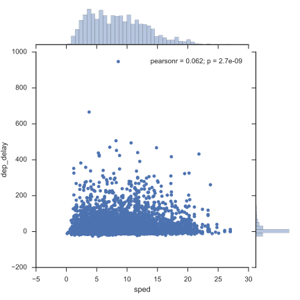
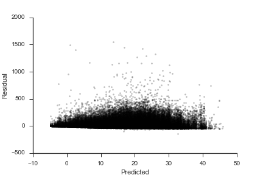

This is part 3 in my series on writing modern idiomatic pandas.
- Modern Pandas
- Method Chaining
- Indexes (this post)
- Fast Pandas (forthcoming)
- Tidy Data (forthcoming)
- Visualization (forthcoming)
- Larger Data (forthcoming)
Today we're going to be talking about pandas' Indexes.
They're essential to pandas, but can be a difficult concept to grasp at first.
I suspect this is partly because they're unlike what you'll find in SQL or R.
Indexes offer
- a metadata container
- easy label-based row selection and assignment
- easy label-based alignment in operations
One of my first tasks when analyzing a new dataset is to identify a unique identifier for each observation, and set that as the index. It could be a simple integer, or like in our first post it could be several columns (carrier, origin dest, tail_num date).
To demonstrate the benefits of proper Index use, we'll first fetch some weather data from sensors at a bunch of airports across the US.
See here for the example scraper I based this off of.
Those uninterested in the details of fetching and prepping the data and skip past it.
At a high level, here's how we'll fetch the data: the sensors are broken up by "network" (states).
We'll make one API call per state to get the list of airport IDs per network (using get_ids below).
Once we have the IDs, we'll again make one call per state getting the actual observations (in get_weather).
Feel free to skim the code below, I'll highlight the interesting bits.
import json import glob import datetime import requests import numpy as np import pandas as pd import seaborn as sns import matplotlib.pyplot as plt sns.set_style('ticks') # States are broken into networks. The networks have a list of ids, each representing a station. # We will take that list of ids and pass them as query parameters to the URL we built up ealier. states = """AK AL AR AZ CA CO CT DE FL GA HI IA ID IL IN KS KY LA MA MD ME MI MN MO MS MT NC ND NE NH NJ NM NV NY OH OK OR PA RI SC SD TN TX UT VA VT WA WI WV WY""".split() # IEM has Iowa AWOS sites in its own labeled network networks = ['AWOS'] + ['{}_ASOS'.format(state) for state in states]
def get_weather(stations, start=pd.Timestamp('2014-01-01'), end=pd.Timestamp('2014-01-31')): ''' Fetch weather data from MESONet between ``start`` and ``stop``. ''' url = ("http://mesonet.agron.iastate.edu/cgi-bin/request/asos.py?" "&data=tmpf&data=relh&data=sped&data=mslp&data=p01i&data" "=vsby&data=gust_mph&data=skyc1&data=skyc2&data=skyc3" "&tz=Etc/UTC&format=comma&latlon=no" "&{start:year1=%Y&month1=%m&day1=%d}" "&{end:year2=%Y&month2=%m&day2=%d}&{stations}") stations = "&".join("station=%s" % s for s in stations) weather = (pd.read_csv(url.format(start=start, end=end, stations=stations), comment="#") .rename(columns={"valid": "date"}) .rename(columns=str.strip) .assign(date=lambda df: pd.to_datetime(df['date'])) .set_index(["station", "date"]) .sort_index()) float_cols = ['tmpf', 'relh', 'sped', 'mslp', 'p01i', 'vsby', "gust_mph"] weather[float_cols] = weather[float_cols].apply(pd.to_numeric, errors="coerce") return weather def get_ids(network): ''' Get all the airport IDs and location data within a network. ''' url = "http://mesonet.agron.iastate.edu/geojson/network.php?network={}" r = requests.get(url.format(network)) md = pd.io.json.json_normalize(r.json()['features']) md['network'] = network return md
There isn't too much in get_weather worth mentioning, just grabbing some CSV files from various URLs.
They put metadata in the "CSV"s at the top of the file as lines prefixed by a #.
Pandas will ignore these with the comment='#' parameter.
I do want to talk briefly about the gem of a method that is json_normalize .
The weather API returns some slightly-nested data.
url = "http://mesonet.agron.iastate.edu/geojson/network.php?network={}" r = requests.get(url.format("AWOS")) js = r.json() js['features'][:2]
[{'geometry': {'coordinates': [-94.2723694444, 43.0796472222],
'type': 'Point'},
'id': 'AXA',
'properties': {'sid': 'AXA', 'sname': 'ALGONA'},
'type': 'Feature'},
{'geometry': {'coordinates': [-93.569475, 41.6878083333], 'type': 'Point'},
'id': 'IKV',
'properties': {'sid': 'IKV', 'sname': 'ANKENY'},
'type': 'Feature'}]
If we just pass that list off to the DataFrame constructor, we get this.
pd.DataFrame(js['features'])
| geometry | id | properties | type | |
|---|---|---|---|---|
| 0 | {'coordinates': [-94.2723694444, 43.0796472222... | AXA | {'sname': 'ALGONA', 'sid': 'AXA'} | Feature |
| 1 | {'coordinates': [-93.569475, 41.6878083333], '... | IKV | {'sname': 'ANKENY', 'sid': 'IKV'} | Feature |
| 2 | {'coordinates': [-95.0465277778, 41.4058805556... | AIO | {'sname': 'ATLANTIC', 'sid': 'AIO'} | Feature |
| 3 | {'coordinates': [-94.9204416667, 41.6993527778... | ADU | {'sname': 'AUDUBON', 'sid': 'ADU'} | Feature |
| 4 | {'coordinates': [-93.848575, 42.0485694444], '... | BNW | {'sname': 'BOONE MUNI', 'sid': 'BNW'} | Feature |
| ... | ... | ... | ... | ... |
45 rows × 4 columns
In general, DataFrames don't handle nested data that well.
It's often better to normalize it somehow.
In this case, we can "lift"
the nested items (geometry.coordinates, properties.sid, and properties.sname)
up to the top level.
pd.io.json.json_normalize(js['features'])
| geometry.coordinates | geometry.type | id | properties.sid | properties.sname | type | |
|---|---|---|---|---|---|---|
| 0 | [-94.2723694444, 43.0796472222] | Point | AXA | AXA | ALGONA | Feature |
| 1 | [-93.569475, 41.6878083333] | Point | IKV | IKV | ANKENY | Feature |
| 2 | [-95.0465277778, 41.4058805556] | Point | AIO | AIO | ATLANTIC | Feature |
| 3 | [-94.9204416667, 41.6993527778] | Point | ADU | ADU | AUDUBON | Feature |
| 4 | [-93.848575, 42.0485694444] | Point | BNW | BNW | BOONE MUNI | Feature |
| ... | ... | ... | ... | ... | ... | ... |
45 rows × 6 columns
Sure, it's not that difficult to write a quick for loop or list comprehension to extract those,
but that gets tedious.
If we were using the latitude and longitude data, we would want to split
the geometry.coordinates column into two. But we aren't so we won't.
Going back to the task, we get the airport IDs for every network (state)
with get_ids. Then we pass those IDs into get_weather to fetch the
actual weather data.
import os ids = pd.concat([get_ids(network) for network in networks], ignore_index=True) gr = ids.groupby('network') # remove the exist_ok kw in py2, or just upgrade already :) os.makedirs("weather", exist_ok=True) for i, (k, v) in enumerate(gr): print("{}/{}".format(i, len(network)), end='\r') weather = get_weather(v['id']) weather.to_csv("weather/{}.csv".format(k)) weather = pd.concat([ pd.read_csv(f, parse_dates='date', index_col=['station', 'date']) for f in glob.glob('weather/*.csv')]) weather.to_hdf("weather.h5", "weather")
Once that's done, we've got this dataframe
weather = pd.read_hdf("weather.h5", "weather").sort_index() weather.head()
| tmpf | relh | sped | mslp | p01i | vsby | gust_mph | skyc1 | skyc2 | skyc3 | ||
|---|---|---|---|---|---|---|---|---|---|---|---|
| station | date | ||||||||||
| 01M | 2014-01-01 00:15:00 | 33.80 | 85.86 | 0.0 | NaN | 0.0 | 10.0 | NaN | CLR | M | M |
| 2014-01-01 00:35:00 | 33.44 | 87.11 | 0.0 | NaN | 0.0 | 10.0 | NaN | CLR | M | M | |
| 2014-01-01 00:55:00 | 32.54 | 90.97 | 0.0 | NaN | 0.0 | 10.0 | NaN | CLR | M | M | |
| 2014-01-01 01:15:00 | 31.82 | 93.65 | 0.0 | NaN | 0.0 | 10.0 | NaN | CLR | M | M | |
| 2014-01-01 01:35:00 | 32.00 | 92.97 | 0.0 | NaN | 0.0 | 10.0 | NaN | CLR | M | M |
OK, that was a bit of work. Here's a plot to reward ourselves. We'll talk more about seaborn in a later post.
airports = ['DSM', 'ORD', 'JFK', 'PDX'] g = sns.FacetGrid(weather.loc[airports].reset_index(), col='station', hue='station', col_wrap=2, size=4) g.map(sns.regplot, 'sped', 'gust_mph')

Set Operations
Indexes are set-like (technically multisets, since you can have duplicates), so they support most python set operations. Since indexes are immutable you won't find any of the inplace set operations.
One other difference is that since Indexes are also array-like, you can't use some infix operators like - for difference. If you have a numeric index it is unclear whether you intend to perform math operations or set operations.
You can use & for intersection, | for union, and ^ for symmetric difference though, since there's no ambiguity.
For example, lets find the set of airports that we have both weather and flight information on. Since weather had a MultiIndex of airport, datetime, we'll use the levels attribute to get at the airport data, separate from the date data.
# Bring in the flights data flights = pd.read_hdf('flights.h5', 'flights') weather_locs = weather.index.levels[0] # The `categories` attribute of a Categorical is an Index origin_locs = flights.origin.cat.categories dest_locs = flights.dest.cat.categories airports = weather_locs & origin_locs & dest_locs airports
Index(['ABE', 'ABI', 'ABQ', 'ABR', 'ABY', 'ACT', 'ACV', 'AEX', 'AGS', 'ALB',
...
'TUL', 'TUS', 'TVC', 'TWF', 'TXK', 'TYR', 'TYS', 'VLD', 'VPS', 'XNA'],
dtype='object', length=267)
And we can look at the airports with either no flights or no weather information.
print("Weather, no flights:\n\t", weather_locs.difference(origin_locs | dest_locs), end='\n\n') print("Flights, no weather:\n\t", (origin_locs | dest_locs).difference(weather_locs), end='\n\n') print("Dropped Stations:\n\t", (origin_locs | dest_locs) ^ weather_locs)
Weather, no flights:
Index(['01M', '04V', '04W', '05U', '06D', '08D', '0A9', '0CO', '0E0', '0F2',
...
'Y50', 'Y51', 'Y63', 'Y70', 'YIP', 'YKM', 'YKN', 'YNG', 'ZPH', 'ZZV'],
dtype='object', length=1909)
Flights, no weather:
Index(['ADK', 'ADQ', 'ANC', 'BET', 'BKG', 'BQN', 'BRW', 'CDV', 'CLD', 'FAI',
'FCA', 'GUM', 'HNL', 'ITO', 'JNU', 'KOA', 'KTN', 'LIH', 'MQT', 'OGG',
'OME', 'OTZ', 'PPG', 'PSE', 'PSG', 'SCC', 'SCE', 'SIT', 'SJU', 'STT',
'STX', 'WRG', 'YAK', 'YUM'],
dtype='object')
Dropped Stations:
Index(['01M', '04V', '04W', '05U', '06D', '08D', '0A9', '0CO', '0E0', '0F2',
...
'Y63', 'Y70', 'YAK', 'YIP', 'YKM', 'YKN', 'YNG', 'YUM', 'ZPH', 'ZZV'],
dtype='object', length=1943)
Flavors
Pandas has many subclasses of the regular Index, each tailored to a specific kind of data.
Most of the time these will be created for you automatically, so you don't have to worry about which one to choose.
IndexInt64IndexRangeIndex: Memory-saving special case ofInt64IndexFloatIndexDatetimeIndex: Datetime64[ns] precision dataPeriodIndex: Regularly-spaced, arbitrary precision datetime data.TimedeltaIndexCategoricalIndexMultiIndex
You will sometimes create a DatetimeIndex with pd.date_range (pd.period_range for PeriodIndex).
And you'll sometimes make a MultiIndex directly too (I'll have an example of this in my post on performace).
Some of these specialized index types are purely optimizations; others use information about the data to provide additional methods. And while you might occasionally work with indexes directly (like the set operations above), most of they time you'll be operating on a Series or DataFrame, which in turn makes use of its Index.
Row Slicing
We saw in part one that indexes great for making row subsetting as easy as column subsetting.
weather.loc['DSM'].head()
| tmpf | relh | sped | mslp | p01i | vsby | gust_mph | skyc1 | skyc2 | skyc3 | |
|---|---|---|---|---|---|---|---|---|---|---|
| date | ||||||||||
| 2014-01-01 00:54:00 | 10.94 | 72.79 | 10.3 | 1024.9 | 0.0 | 10.0 | NaN | FEW | M | M |
| 2014-01-01 01:54:00 | 10.94 | 72.79 | 11.4 | 1025.4 | 0.0 | 10.0 | NaN | OVC | M | M |
| 2014-01-01 02:54:00 | 10.94 | 72.79 | 8.0 | 1025.3 | 0.0 | 10.0 | NaN | BKN | M | M |
| 2014-01-01 03:54:00 | 10.94 | 72.79 | 9.1 | 1025.3 | 0.0 | 10.0 | NaN | OVC | M | M |
| 2014-01-01 04:54:00 | 10.04 | 72.69 | 9.1 | 1024.7 | 0.0 | 10.0 | NaN | BKN | M | M |
Without indexes we'd probably resort to boolean masks.
weather2 = weather.reset_index() weather2[weather2['station'] == 'DSM'].head()
| station | date | tmpf | relh | sped | mslp | p01i | vsby | gust_mph | skyc1 | skyc2 | skyc3 | |
|---|---|---|---|---|---|---|---|---|---|---|---|---|
| 884855 | DSM | 2014-01-01 00:54:00 | 10.94 | 72.79 | 10.3 | 1024.9 | 0.0 | 10.0 | NaN | FEW | M | M |
| 884856 | DSM | 2014-01-01 01:54:00 | 10.94 | 72.79 | 11.4 | 1025.4 | 0.0 | 10.0 | NaN | OVC | M | M |
| 884857 | DSM | 2014-01-01 02:54:00 | 10.94 | 72.79 | 8.0 | 1025.3 | 0.0 | 10.0 | NaN | BKN | M | M |
| 884858 | DSM | 2014-01-01 03:54:00 | 10.94 | 72.79 | 9.1 | 1025.3 | 0.0 | 10.0 | NaN | OVC | M | M |
| 884859 | DSM | 2014-01-01 04:54:00 | 10.04 | 72.69 | 9.1 | 1024.7 | 0.0 | 10.0 | NaN | BKN | M | M |
Slightly less convenient, but still doable.
Indexes for Easier Arithmetic, Analysis
It's nice to have your metadata (labels on each observation) next to you actual values. But if you store them in an array, they'll get in the way of your operations. Say we wanted to translate the Fahrenheit temperature to Celsius.
# With indecies temp = weather['tmpf'] c = (temp - 32) * 5 / 9 c
| tmpf | ||
|---|---|---|
| station | date | |
| 01M | 2014-01-01 00:15:00 | 1.0 |
| 2014-01-01 00:35:00 | 0.8 | |
| 2014-01-01 00:55:00 | 0.3 | |
| 2014-01-01 01:15:00 | -0.1 | |
| 2014-01-01 01:35:00 | 0.0 | |
| ... | ... | ... |
| ZZV | 2014-01-30 19:53:00 | -2.8 |
| 2014-01-30 20:53:00 | -2.2 | |
| 2014-01-30 21:53:00 | -2.2 | |
| 2014-01-30 22:53:00 | -2.8 | |
| 2014-01-30 23:53:00 | -1.7 |
3303647 rows × 1 columns
# without temp2 = weather.reset_index()[['station', 'date', 'tmpf']] temp2['tmpf'] = (temp2['tmpf'] - 32) * 5 / 9 temp2.head()
| station | date | tmpf | |
|---|---|---|---|
| 0 | 01M | 2014-01-01 00:15:00 | 1.0 |
| 1 | 01M | 2014-01-01 00:35:00 | 0.8 |
| 2 | 01M | 2014-01-01 00:55:00 | 0.3 |
| 3 | 01M | 2014-01-01 01:15:00 | -0.1 |
| 4 | 01M | 2014-01-01 01:35:00 | 0.0 |
Again, not terrible, but not as good.
And, what if you had wanted to keep Fahrenheit around as well, instead of overwriting it like we did?
Then you'd need to make a copy of everything, including the station and date columns.
We don't have that problem, since indexes are immutable and safely shared between DataFrames / Series.
temp.index is c.index True
Indexes for Alignment
I've saved the best for last. Automatic alignment, or reindexing, is fundamental to pandas.
All binary operations (add, multiply, etc.) between Series/DataFrames first align and then proceed.
Let's suppose we have hourly observations on temperature and windspeed. And suppose some of the observations were invalid, and not reported (simulated below by sampling from the full dataset). We'll assume the missing windspeed observations were potentially different from the missing temperature observations.
dsm = weather.loc['DSM'] hourly = dsm.resample('H').mean() temp = hourly['tmpf'].sample(frac=.5, random_state=1).sort_index() sped = hourly['sped'].sample(frac=.5, random_state=2).sort_index() temp.head()
date 2014-01-01 00:00:00 10.94 2014-01-01 02:00:00 10.94 2014-01-01 03:00:00 10.94 2014-01-01 04:00:00 10.04 2014-01-01 05:00:00 10.04 Name: tmpf, dtype: float64
sped.head()
date 2014-01-01 01:00:00 11.4 2014-01-01 02:00:00 8.0 2014-01-01 03:00:00 9.1 2014-01-01 04:00:00 9.1 2014-01-01 05:00:00 10.3 Name: sped, dtype: float64
Notice that the two indexes aren't identical.
Suppose that the windspeed : temperature ratio is meaningful.
When we go to compute that, pandas will automatically align the two by index label.
sped / temp
date
2014-01-01 00:00:00 NaN
2014-01-01 01:00:00 NaN
2014-01-01 02:00:00 0.731261
2014-01-01 03:00:00 0.831810
2014-01-01 04:00:00 0.906375
...
2014-01-30 13:00:00 NaN
2014-01-30 14:00:00 0.584712
2014-01-30 17:00:00 NaN
2014-01-30 21:00:00 NaN
2014-01-30 23:00:00 NaN
dtype: float64
This lets you focus on doing the operation, rather than manually aligning things, ensuring that the arrays are the same length and in the same order.
By deault, missing values are inserted where the two don't align.
You can use the method version of any binary operation to specify a fill_value
sped.div(temp, fill_value=1)
date
2014-01-01 00:00:00 0.091408
2014-01-01 01:00:00 11.400000
2014-01-01 02:00:00 0.731261
2014-01-01 03:00:00 0.831810
2014-01-01 04:00:00 0.906375
...
2014-01-30 13:00:00 0.027809
2014-01-30 14:00:00 0.584712
2014-01-30 17:00:00 0.023267
2014-01-30 21:00:00 0.035663
2014-01-30 23:00:00 13.700000
dtype: float64
And since I couldn't find anywhere else to put it, I'll mention here that you can control the axis the operation is aligned along as well.
hourly.div(sped, axis='index')
| tmpf | relh | sped | mslp | p01i | vsby | gust_mph | |
|---|---|---|---|---|---|---|---|
| date | |||||||
| 2014-01-01 00:00:00 | NaN | NaN | NaN | NaN | NaN | NaN | NaN |
| 2014-01-01 01:00:00 | 0.959649 | 6.385088 | 1.0 | 89.947368 | 0.0 | 0.877193 | NaN |
| 2014-01-01 02:00:00 | 1.367500 | 9.098750 | 1.0 | 128.162500 | 0.0 | 1.250000 | NaN |
| 2014-01-01 03:00:00 | 1.202198 | 7.998901 | 1.0 | 112.670330 | 0.0 | 1.098901 | NaN |
| 2014-01-01 04:00:00 | 1.103297 | 7.987912 | 1.0 | 112.604396 | 0.0 | 1.098901 | NaN |
| ... | ... | ... | ... | ... | ... | ... | ... |
| 2014-01-30 19:00:00 | NaN | NaN | NaN | NaN | NaN | NaN | NaN |
| 2014-01-30 20:00:00 | NaN | NaN | NaN | NaN | NaN | NaN | NaN |
| 2014-01-30 21:00:00 | NaN | NaN | NaN | NaN | NaN | NaN | NaN |
| 2014-01-30 22:00:00 | NaN | NaN | NaN | NaN | NaN | NaN | NaN |
| 2014-01-30 23:00:00 | 1.600000 | 4.535036 | 1.0 | 73.970803 | 0.0 | 0.729927 | NaN |
720 rows × 7 columns
The non row-labeled version of our simple div operation is messy.
temp2 = temp.reset_index() sped2 = sped.reset_index() # Find rows where the operation is defined common_dates = pd.Index(temp2.date) & sped2.date pd.concat([ # concat to not lose date information sped2.loc[sped2['date'].isin(common_dates), 'date'], (sped2.loc[sped2.date.isin(common_dates), 'sped'] / temp2.loc[temp2.date.isin(common_dates), 'tmpf'])], axis=1).dropna(how='all')
| date | 0 | |
|---|---|---|
| 1 | 2014-01-01 02:00:00 | 0.731261 |
| 2 | 2014-01-01 03:00:00 | 0.831810 |
| 3 | 2014-01-01 04:00:00 | 0.906375 |
| 4 | 2014-01-01 05:00:00 | 1.025896 |
| 8 | 2014-01-01 13:00:00 | NaN |
| ... | ... | ... |
| 351 | 2014-01-29 23:00:00 | 0.535609 |
| 354 | 2014-01-30 05:00:00 | 0.487735 |
| 356 | 2014-01-30 09:00:00 | NaN |
| 357 | 2014-01-30 10:00:00 | 0.618939 |
| 358 | 2014-01-30 14:00:00 | NaN |
170 rows × 2 columns
And we have a bug in there. Can you spot it?
I only grabbed the dates from sped2 in the line sped2.loc[sped2['date'].isin(common_dates), 'date'].
Really that should be sped2.loc[sped2.date.isin(common_dates)] | temp2.loc[temp2.date.isin(common_dates)].
But I think leaving the buggy version states my case even more strongly. The temp / sped version where pandas aligns everything is better.
Merging
There are two ways of merging DataFrames / Series in pandas.
- Relational Database style with
pd.merge - Array style with
pd.concat
Personally, I think in terms of the concat style.
I learned pandas before I ever really used SQL, so it comes more naturally to me I suppose.
Concat Version
pd.concat([temp, sped], axis=1).head()
| tmpf | sped | |
|---|---|---|
| date | ||
| 2014-01-01 00:00:00 | 10.94 | NaN |
| 2014-01-01 01:00:00 | NaN | 11.4 |
| 2014-01-01 02:00:00 | 10.94 | 8.0 |
| 2014-01-01 03:00:00 | 10.94 | 9.1 |
| 2014-01-01 04:00:00 | 10.04 | 9.1 |
The axis parameter controls how the data should be stacked, 0 for vertically, 1 for horizontally.
The join parameter controls the merge behavior on the shared axis, (the Index for axis=1). By default it's like a union of the two indexes, or an outer join.
pd.concat([temp, sped], axis=1, join='inner')
| tmpf | sped | |
|---|---|---|
| date | ||
| 2014-01-01 02:00:00 | 10.94 | 8.000 |
| 2014-01-01 03:00:00 | 10.94 | 9.100 |
| 2014-01-01 04:00:00 | 10.04 | 9.100 |
| 2014-01-01 05:00:00 | 10.04 | 10.300 |
| 2014-01-01 13:00:00 | 8.96 | 13.675 |
| ... | ... | ... |
| 2014-01-29 23:00:00 | 35.96 | 18.200 |
| 2014-01-30 05:00:00 | 33.98 | 17.100 |
| 2014-01-30 09:00:00 | 35.06 | 16.000 |
| 2014-01-30 10:00:00 | 35.06 | 21.700 |
| 2014-01-30 14:00:00 | 35.06 | 20.500 |
170 rows × 2 columns
Merge Version
Since we're joining by index here the merge version is quite similar.
pd.merge(temp.to_frame(), sped.to_frame(), left_index=True, right_index=True).head()
| tmpf | sped | |
|---|---|---|
| date | ||
| 2014-01-01 02:00:00 | 10.94 | 8.000 |
| 2014-01-01 03:00:00 | 10.94 | 9.100 |
| 2014-01-01 04:00:00 | 10.04 | 9.100 |
| 2014-01-01 05:00:00 | 10.04 | 10.300 |
| 2014-01-01 13:00:00 | 8.96 | 13.675 |
pd.merge(temp.to_frame(), sped.to_frame(), left_index=True, right_index=True, how='outer').head()
| tmpf | sped | |
|---|---|---|
| date | ||
| 2014-01-01 00:00:00 | 10.94 | NaN |
| 2014-01-01 01:00:00 | NaN | 11.4 |
| 2014-01-01 02:00:00 | 10.94 | 8.0 |
| 2014-01-01 03:00:00 | 10.94 | 9.1 |
| 2014-01-01 04:00:00 | 10.04 | 9.1 |
Like I said, I typically prefer concat to merge.
The exception here is one-to-many type joins. Let's walk through one of those,
where we join the flight data to the weather data.
To focus just on the merge, we'll aggregate hour weather data to be daily, rather than trying to find the closest recorded weather observation to each departure (you could do that, but it's not the focus right now). We'll then join the one (airport, date) record to the many (airport, date, flight) records.
Quick tangent, to get the weather data to daily frequency, we'll need to resample (more on that in the timeseries section). The resample essentially splits the recorded values into daily buckets and computes the aggregation function on each bucket. The only wrinkle is that we have to resample by station, so we'll use the pd.TimeGrouper helper.
idx_cols = ['unique_carrier', 'origin', 'dest', 'tail_num', 'fl_num', 'fl_date'] def mode(x): ''' Arbitrarily break ties. ''' return x.value_counts().index[0] aggfuncs = {'tmpf': 'mean', 'relh': 'mean', 'sped': 'mean', 'mslp': 'mean', 'p01i': 'mean', 'vsby': 'mean', 'gust_mph': 'mean', 'skyc1': mode, 'skyc2': mode, 'skyc3': mode} # TimeGrouper works on a DatetimeIndex, so we move `station` to the # columns and then groupby it as well. daily = (weather.reset_index(level="station") .groupby([pd.TimeGrouper('1d'), "station"]) .agg(aggfuncs)) daily.head()
| gust_mph | vsby | sped | relh | skyc1 | tmpf | skyc2 | mslp | p01i | skyc3 | ||
|---|---|---|---|---|---|---|---|---|---|---|---|
| date | station | ||||||||||
| 2014-01-01 | 01M | NaN | 9.229167 | 2.262500 | 81.117917 | CLR | 35.747500 | M | NaN | 0.0 | M |
| 04V | 31.307143 | 9.861111 | 11.131944 | 72.697778 | CLR | 18.350000 | M | NaN | 0.0 | M | |
| 04W | NaN | 10.000000 | 3.601389 | 69.908056 | OVC | -9.075000 | M | NaN | 0.0 | M | |
| 05U | NaN | 9.929577 | 3.770423 | 71.519859 | CLR | 26.321127 | M | NaN | 0.0 | M | |
| 06D | NaN | 9.576389 | 5.279167 | 73.784179 | CLR | -11.388060 | M | NaN | 0.0 | M |
Now that we have daily flight and weather data, we can merge.
We'll use the on keyword to indicate the columns we'll merge on (this is like a USING (...) SQL statement), we just have to make sure the names align.
m = pd.merge(flights, daily.reset_index().rename(columns={'date': 'fl_date', 'station': 'origin'}), on=['fl_date', 'origin']).set_index(idx_cols).sort_index() m.head()
| airline_id | origin_airport_id | origin_airport_seq_id | origin_city_market_id | origin_city_name | origin_state_nm | dest_airport_id | dest_airport_seq_id | dest_city_market_id | dest_city_name | ... | gust_mph | vsby | sped | relh | skyc1 | tmpf | skyc2 | mslp | p01i | skyc3 | ||||||
|---|---|---|---|---|---|---|---|---|---|---|---|---|---|---|---|---|---|---|---|---|---|---|---|---|---|---|
| unique_carrier | origin | dest | tail_num | fl_num | fl_date | |||||||||||||||||||||
| AA | ABQ | DFW | N200AA | 1090 | 2014-01-27 | 19805 | 10140 | 1014002 | 30140 | Albuquerque, NM | New Mexico | 11298 | 1129803 | 30194 | Dallas/Fort Worth, TX | ... | NaN | 10.0 | 6.737500 | 34.267500 | SCT | 41.8325 | M | 1014.620833 | 0.0 | M |
| 1662 | 2014-01-06 | 19805 | 10140 | 1014002 | 30140 | Albuquerque, NM | New Mexico | 11298 | 1129803 | 30194 | Dallas/Fort Worth, TX | ... | NaN | 10.0 | 9.270833 | 27.249167 | CLR | 28.7900 | M | 1029.016667 | 0.0 | M | ||||
| N202AA | 1332 | 2014-01-27 | 19805 | 10140 | 1014002 | 30140 | Albuquerque, NM | New Mexico | 11298 | 1129803 | 30194 | Dallas/Fort Worth, TX | ... | NaN | 10.0 | 6.737500 | 34.267500 | SCT | 41.8325 | M | 1014.620833 | 0.0 | M | |||
| N426AA | 1467 | 2014-01-15 | 19805 | 10140 | 1014002 | 30140 | Albuquerque, NM | New Mexico | 11298 | 1129803 | 30194 | Dallas/Fort Worth, TX | ... | NaN | 10.0 | 6.216667 | 34.580000 | FEW | 40.2500 | M | 1027.800000 | 0.0 | M | |||
| 1662 | 2014-01-09 | 19805 | 10140 | 1014002 | 30140 | Albuquerque, NM | New Mexico | 11298 | 1129803 | 30194 | Dallas/Fort Worth, TX | ... | NaN | 10.0 | 3.087500 | 42.162500 | FEW | 34.6700 | M | 1018.379167 | 0.0 | M |
5 rows × 40 columns
Since data-wrangling on its own is never the goal, let's do some quick analysis. Seaborn makes it easy to explore bivariate relationships.
m.sample(n=10000).pipe((sns.jointplot, 'data'), 'sped', 'dep_delay')

Looking at the various sky coverage states (I haven't found out exactly what these represent, but they seem to matter):
m.groupby('skyc1').dep_delay.agg(['mean', 'count']).sort_values(by='mean')
| mean | count | |
|---|---|---|
| skyc1 | ||
| M | -1.948052 | 77 |
| CLR | 11.222288 | 115121 |
| FEW | 16.863177 | 161727 |
| SCT | 17.803048 | 19289 |
| BKN | 18.638034 | 54030 |
| OVC | 21.667762 | 52643 |
| VV | 30.487008 | 9583 |
import statsmodels.api as sm
Statsmodels (via patsy can automatically convert dummy data to dummy variables in a formula with the C function).
mod = sm.OLS.from_formula('dep_delay ~ C(skyc1) + distance + tmpf + relh + sped + mslp', data=m) res = mod.fit() res.summary()
| Dep. Variable: | dep_delay | R-squared: | 0.026 |
|---|---|---|---|
| Model: | OLS | Adj. R-squared: | 0.025 |
| Method: | Least Squares | F-statistic: | 976.4 |
| Date: | Sun, 10 Apr 2016 | Prob (F-statistic): | 0.00 |
| Time: | 09:02:27 | Log-Likelihood: | -2.1453e+06 |
| No. Observations: | 410372 | AIC: | 4.291e+06 |
| Df Residuals: | 410360 | BIC: | 4.291e+06 |
| Df Model: | 11 | ||
| Covariance Type: | nonrobust |
| coef | std err | t | P>|t| | [95.0% Conf. Int.] | |
|---|---|---|---|---|---|
| Intercept | -331.1032 | 10.828 | -30.577 | 0.000 | -352.327 -309.880 |
| C(skyc1)[T.CLR] | -4.4041 | 0.249 | -17.662 | 0.000 | -4.893 -3.915 |
| C(skyc1)[T.FEW] | -0.7330 | 0.226 | -3.240 | 0.001 | -1.176 -0.290 |
| C(skyc1)[T.M] | -16.4341 | 8.681 | -1.893 | 0.058 | -33.448 0.580 |
| C(skyc1)[T.OVC] | 0.3818 | 0.281 | 1.358 | 0.174 | -0.169 0.933 |
| C(skyc1)[T.SCT] | 0.8589 | 0.380 | 2.260 | 0.024 | 0.114 1.604 |
| C(skyc1)[T.VV ] | 8.8603 | 0.509 | 17.414 | 0.000 | 7.863 9.858 |
| distance | 0.0008 | 0.000 | 6.174 | 0.000 | 0.001 0.001 |
| tmpf | -0.1841 | 0.005 | -38.390 | 0.000 | -0.193 -0.175 |
| relh | 0.1626 | 0.004 | 38.268 | 0.000 | 0.154 0.171 |
| sped | 0.6096 | 0.018 | 33.716 | 0.000 | 0.574 0.645 |
| mslp | 0.3340 | 0.010 | 31.960 | 0.000 | 0.313 0.354 |
| Omnibus: | 456713.147 | Durbin-Watson: | 1.872 |
|---|---|---|---|
| Prob(Omnibus): | 0.000 | Jarque-Bera (JB): | 76162962.824 |
| Skew: | 5.535 | Prob(JB): | 0.00 |
| Kurtosis: | 68.816 | Cond. No. | 2.07e+05 |
plt.scatter(res.fittedvalues, res.resid, color='k', marker='.', alpha=.25) sns.despine()

Those residuals should look like white noise. Looks like our linear model isn't flexible enough to model the delays, but I think that's enough for now.
We'll talk more about indexes in the Tidy Data and Reshaping section. Let me know if you have any feedback. Thanks for reading!